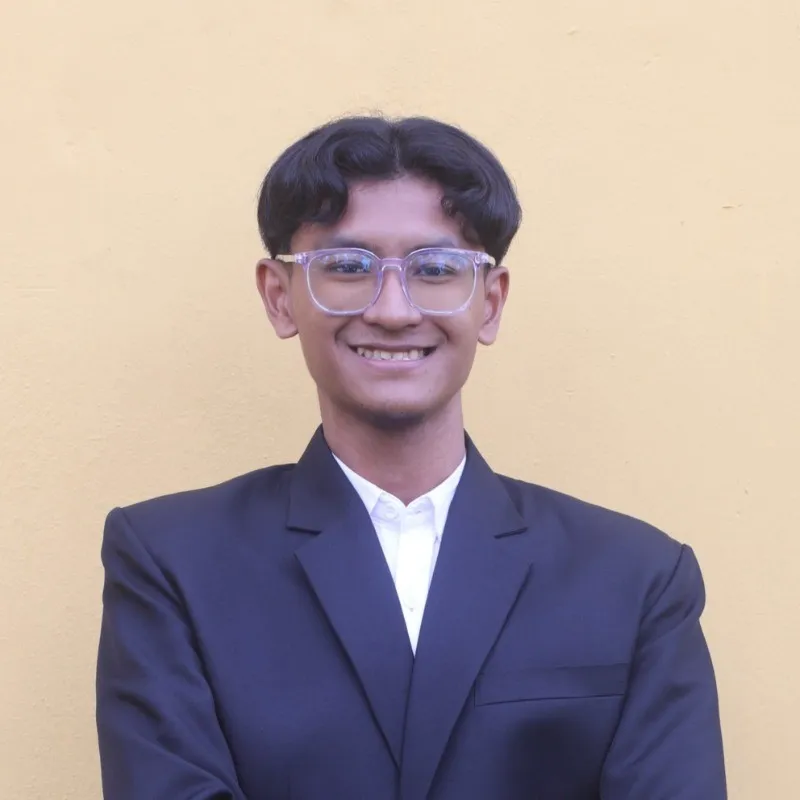

I'm Muhammad Irfan Rusydi Razaleigh,
Enthusiastic game development student pursuing a BSc (Hons) in Information Technology (Game Technology) at UTEM.
I have received awards in game design and programming and have experience in developing various projects.
Looking for a job as game designer / game programmer.
Resume & Cover Letter
Skills
Unreal Engine 5 Unity Blender C# C++ Python AutoCAD HTML CSS Javascript Github DaVinci Resolve Adobe Photoshop Adobe After Effects Critical Thinking Leadership and Event Management
Contact Details
Email: muhdirfanrusydi@gmail.com
Phone: Follow Up with email.
Address: Durian Tunggal, Melaka, Malaysia.
Referees 1
Name: Ts. Dr. Ahmad Shaarizan bin Shaarani
Position: Deputy Dean of Academic Affairs
Faculty of Information and Communication Technology (FTMK)
Institution: Universiti Teknikal Malaysia Melaka (UTeM)
Phone: +6062704527
Email: shaarizan@utem.edu.my
Referees 2
Name: Nazreen bin Abdullasim
Position: Senior Lecturer
Faculty of Information and Communication Technology (FTMK)
Institution: Universiti Teknikal Malaysia Melaka (UTeM)
Phone: +6062702550
Email: nazreen.abdullasim@utem.edu.my